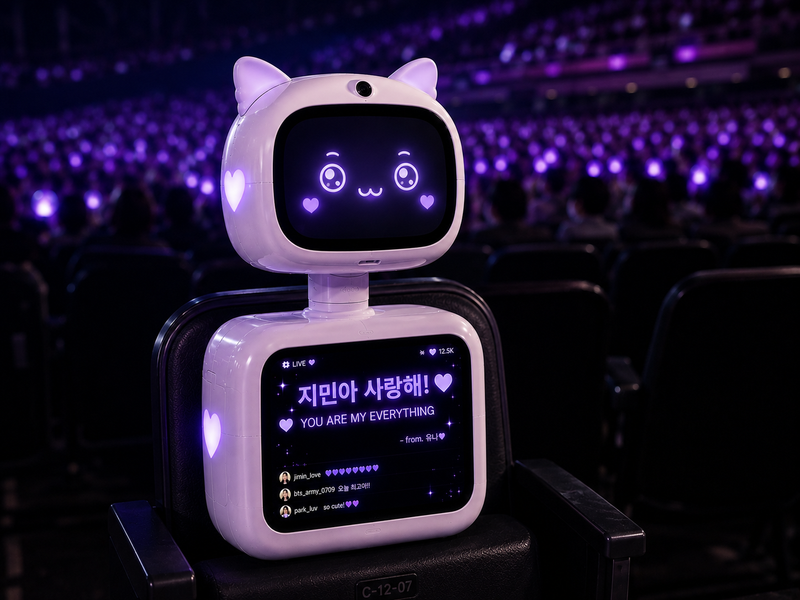
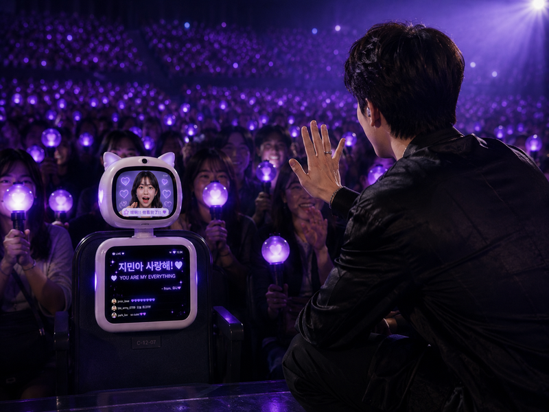
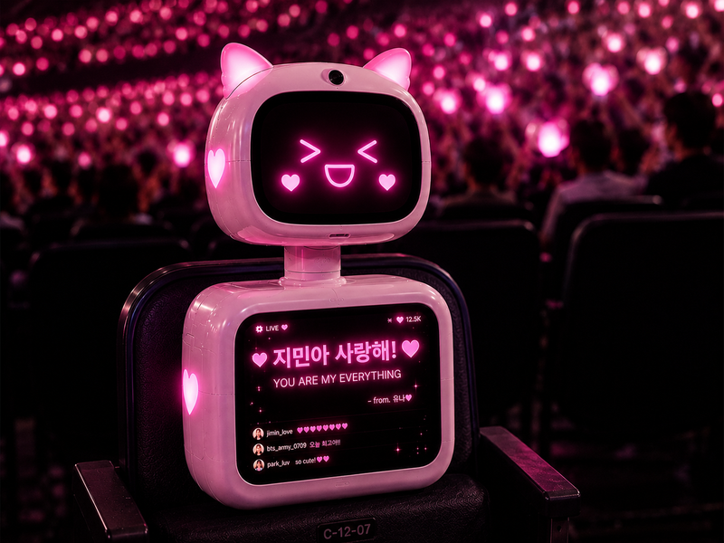
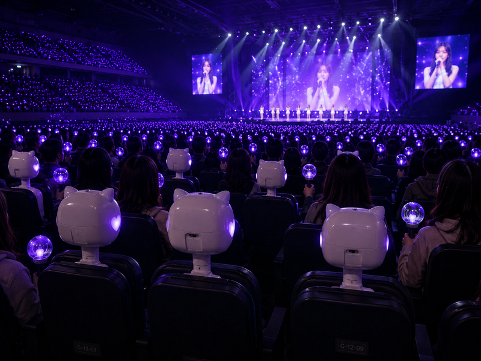

An interactive concert-photography robot — a seat-bound proxy that lets remote fans be present in the crowd.
Why remote fans still feel left out — and where a physical proxy could change that.
A half-body robot fixed to a seat allows remote fans to interact and communicate with on-site audiences through the robot proxy.
Three parts turn an empty seat into a two-way window between the remote fan and the live crowd.
Shows the viewer's face and real-time emotional expressions, and can display remote fans' cheering messages live.
A live monitor feed for the viewer, plus high-quality moment-capture for keeping the memories.
The head rotates left and right to simulate audience gaze and camera tracking, while enabling interaction with on-site fans.
The proxy in context — reacting, cheering, and capturing moments from CATTY.



